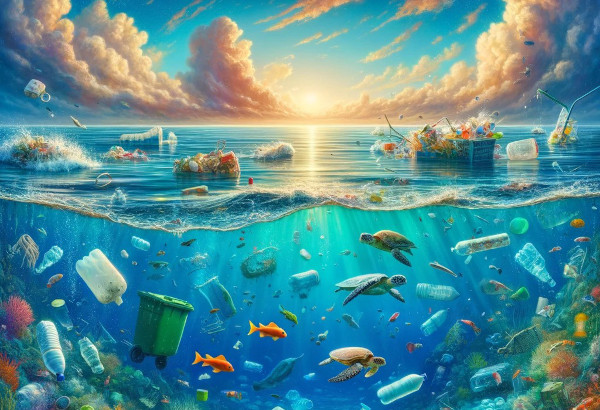
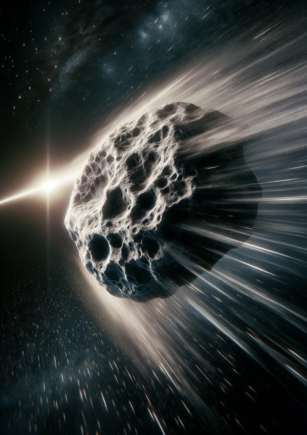
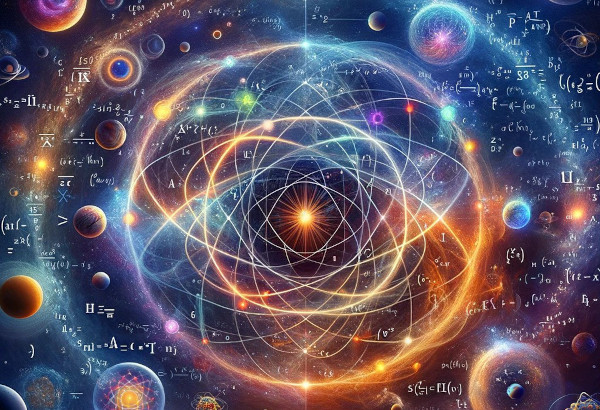
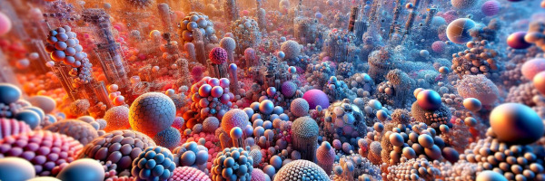

Technology
Crystals used to stabilize time in quantum computers

Environment
Enzymes eat oceanic pollution

Nasa
Samples collected from debris thrown off by collision between asteroids in deep space could
give clues to origins of the universe and point towards extra-terrestrial life

Physics
Unified Theory: physicists are rewriting the book

Health
Inhalable nanoparticles could be gamechanger in fight against pulmonary diseases